Replicate Using Scopes and Collections
XDCR can be performed with reference to scopes and collections within source and target buckets.
Understanding Scopes, Collections, and Replication
As described in Scopes and Collections, scopes and collections are containers for data within a bucket. A cluster can contain up to 1000 scopes; and it can contain 1000 collections.
As well as specifying a source bucket and a target bucket, XDCR can specify scopes and collections within those buckets. This allows data to be replicated from one collection to another. For an overview, see XDCR Using Scopes and Collections.
Applying Filters
Data replicated between collections can be filtered. An overview is provided in XDCR Advanced Filtering; and examples of filtering are provided in Filter a Replication.
Note in particular that settings for deletion filters must be appropriately determined before replication or migration is performed: failure to establish the correct settings for deletion filters may, in certain circumstances, lead to data loss. For information, see Using Deletion Filters.
Examples on this Page
The first set of examples provided on this page — Replicate Data Between Collections Implicitly, with the UI, Replicate Data Between Collections Explicitly, with the UI and Migrate Data to a Collection, with the UI — demonstrate how XDCR can be performed with reference to scopes and collections within source and target buckets, using Couchbase Web Console. The examples assume the following:
-
A single-node cluster named
10.144.210.101has been created, and features thetravel-sampleandbeer-samplebuckets. See Install Sample Buckets, for information on installing these buckets. Note that thetravel-samplebucket contains multiple scopes and collections, from which replications to the target cluster can be immediately established. Thebeer-samplecontains only thedefaultscope and collection, within which all data is contained: the _migration process will be used to separate data into scopes and collections on the target cluster. -
A single-node cluster named
10.144.210.102has been created, and features no buckets. Note that during the course of the examples on this page, buckets, scopes, and collections will need to be created on the10.144.210.102cluster: therefore, knowledge of how to create buckets, scopes, and collections must first be attained. For comprehensive instructions, see Create a Bucket and Manage Scopes and Collections. -
The cluster
10.144.210.101has defined10.144.210.102as a remote cluster for XDCR: this will permit replications to be established between the two clusters.
Before following the examples, familiarity should be gained with all XDCR management-basics explained on other pages. In particular, see Prepare for XDCR, Create a Reference, and Create a Replication.
The subsequent examples provided on this page — in CLI Procedures and REST API Procedures — assume the same starting-points as those for the UI; and achieve the same goals, by means of the Couchbase CLI and REST API respectively.
Replicate Data Between Collections Implicitly, with the UI
XDCR allows data to be replicated between collections implicitly.
An implicit mapping is one supported by XDCR whenever the same keyspace exists within both the source and the target buckets.
The keyspace is formed with a scope-name and the collection-name.
Therefore, if a source bucket contains the keyspace scope1.collection1, and the target bucket also contains the keyspace scope1.collection1, once a replication has been established from the source bucket to the target cluster and bucket, data will be automatically replicated from the source collection to the target collection.
This is demonstrated in the following example.
Proceed as follows.
-
On cluster
101.144.210.101, access the Buckets screen: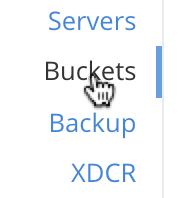 -
When the screen appears, vertically expand the row for the
travel-samplebucket; then, by means of the Scopes and Collections tab at the right-hand side of the row, examine the scopes already defined for the bucket. Then, vertically expand the row for the scopeinventory. The screen now appears as follows: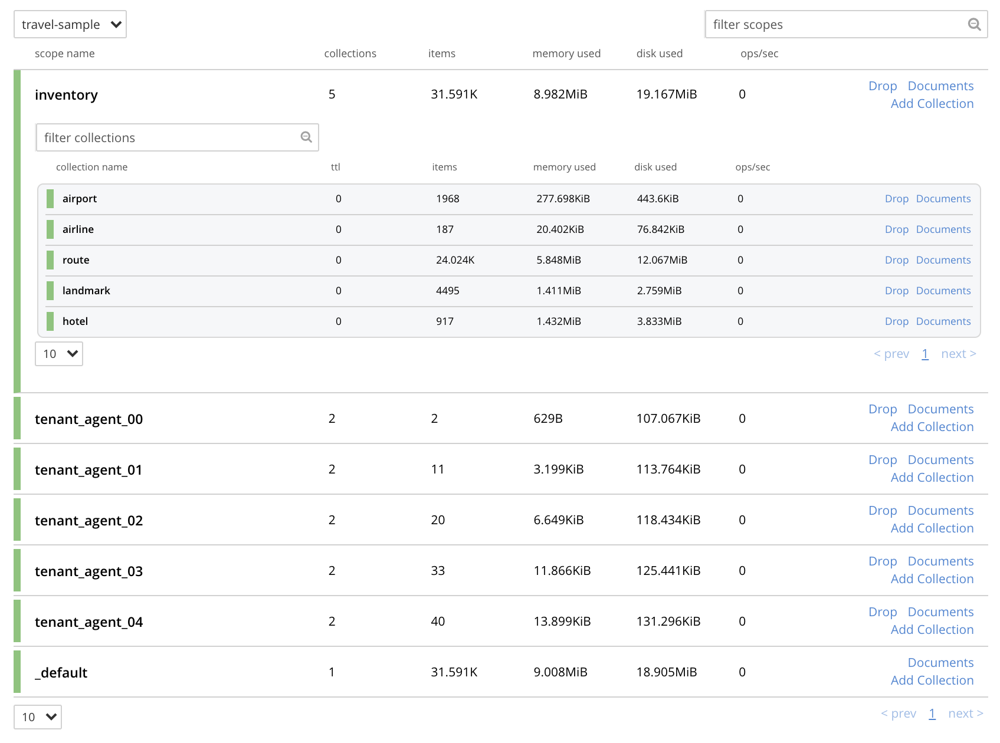The screen shows that the scope
inventorycontains five collections; which are namedairport,airline,route,landmark, andhotel. In this example, the scopeinventoryand all five collections within it will be replicated to the target cluster.The screen also shows that the
travel-samplebucket contains, as well as its_defaultscope, five additional scopes: which are namedtenant_agent_00totenant_agent_04. These scopes will not be replicated in this example. -
On cluster
101.144.210.102, access the Buckets screen. -
Using the procedure described in Create a Bucket, create a Couchbase bucket namd
ts. -
Using the procedures described in Manage Scopes and Collections, create, within
ts, a scope namedinventory; and withininventory, five collections; namedairport,airline,route,landmark, andhotel. (The Time-to-Live for each of these collections can be left at the default of0.)With the row for
inventoryvertically expanded, the Scopes and Collections screen for the buckettsnow appears as follows: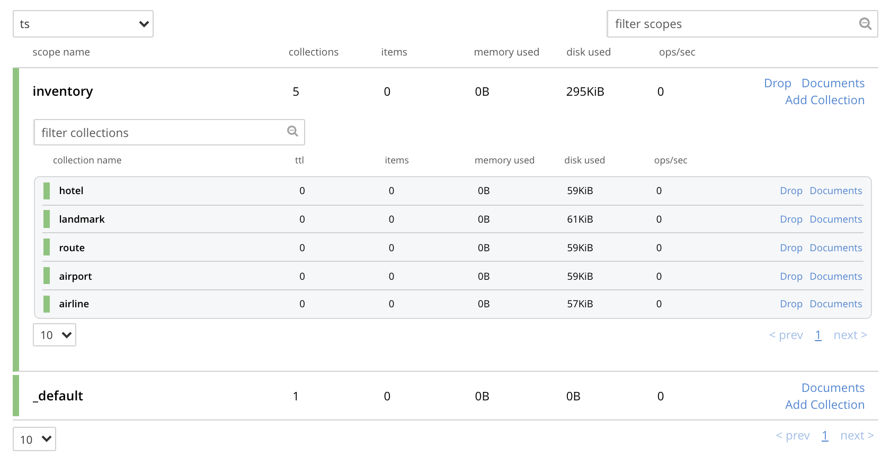This indicates that the scope and collections have been successfully created, and contain no data. The keyspaces thus formed — inventory.airline, inventory.airport, etc — are identical to ones that already exist on the source cluster,
10.144.210.101. The_defaultscope fortsis also displayed. Note that the other scopes on the target cluster — namedtenant_agent_00totenant_agent_03— have not been created here, and will not be used for replication in the current example. -
On cluster
101.144.210.101, access the XDCR Replications screen.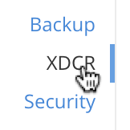Currently, this has a remote reference to cluster
101.144.210.102defined; but no replications have yet been defined. -
Left-click on the ADD REPLICATION button, at the upper right, to begin the process of defining a replication.
-
When the XDCR Add Replication screen is displayed, use the fields in the upper part of the screen to specify a replication from the bucket
travel-sampleto the bucketts, on cluster101.144.210.102. The fields now appear as follows;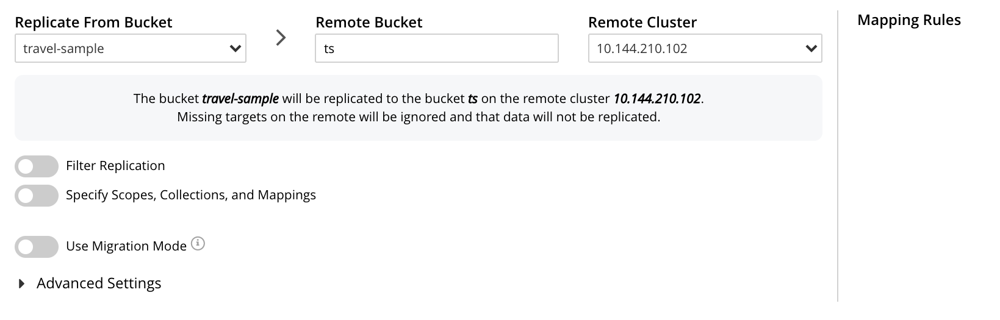 -
Save the replication, by left-clicking on the Save Replication button.

The replication is now started.
-
Examine the XDCR Replications screen.
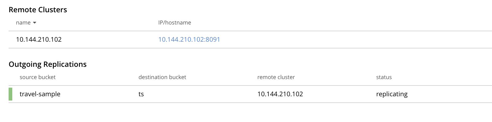This confirms that replication is underway.
-
On cluster
10.144.210.102, access the Buckets screen; and access the Scopes and Collections screen for the bucketts. By successively left-clicking, open the row forts, for the scopeinventory; and then left-click on the Documents tab for any of the five collections previously created — for example,airline. The Documents screen appears as follows: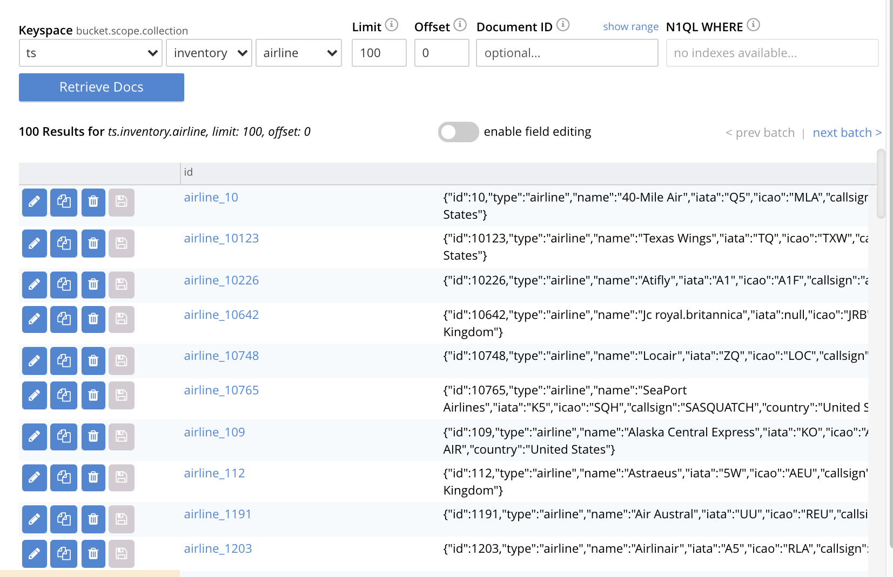The presence of these documents verifies that replication has occurred from
travel-sampleon the source, totson the target; with replication occurring according to the implicit mappings discovered by XDCR. Note that those scopes withintravel-samplethat did not have an implicit mapping created have not been replicated.
Replicate Data Between Collections Explicitly, with the UI
An explicit mapping between collections is one established by an administrator, so as to allow replication to occur between different keyspaces. This is demonstrated in the following example; which assumes, as its starting point, that the previous example, Replicate Data Between Collections Implicitly, with the UI, has been completed, and the resulting state has not been modified.
Proceed as follows:
-
On cluster
10.144.210.102, access the Scopes & Collections screen for the bucketts. Left-click on the Add Collection tab, at the left-hand side of the row for theinventoryscope: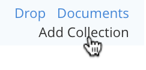
When the Add Collection dialog appears, specify the name
MyAirport, and leave Time-to-Live at0: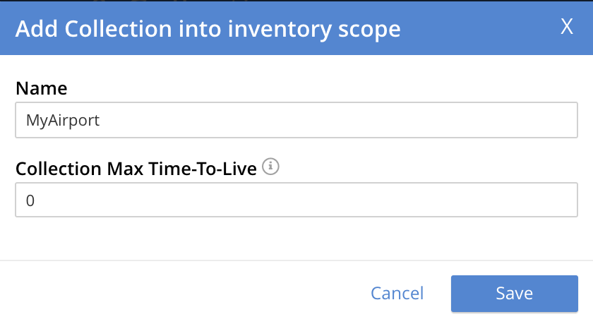
Left-click on the Save button. The Scopes & Collections screen now confirms that the collection
MyAirporthas been added to the scopeinventory: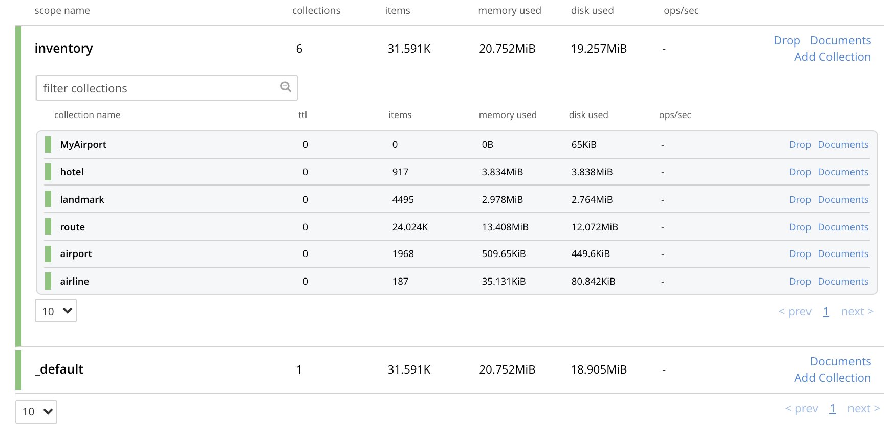
-
On cluster
10.144.210.101, access the XDCR Replications screen. Currently, a remote reference to10.144.210.102is defined; and a single replication exists. -
Delete the existing replication: this is because we now intend to create another replication to the same bucket,
ts; and XDCR only permits one replication to be defined, for a given target-bucket.Vertically expand the row for the existing replication, by left-clicking. Then, left-click on the Delete button, and confirm deletion of the replication:
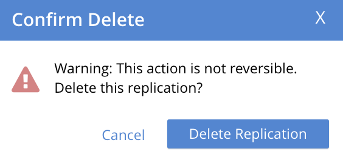
-
Left-click on the ADD REPLICATION button, at the upper right of the screen, to begin creating a new replication. When the XDCR Add Replication screen is displayed, in the Replicate From Bucket field, specify
travel-sample; in the Remote Bucket field, specifyts; and in the Remote Cluster field, specify10.144.210.102. -
Left-click on the Specify Scopes, Collections, and Mappings toggle:
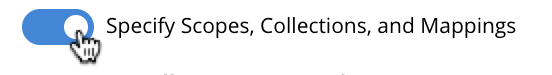This expands the panel, as follows:
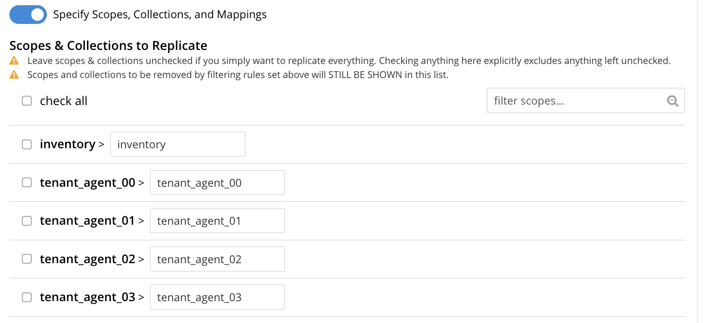The principal element is a list of scopes that are defined within the specified source bucket,
ts. Note that a filter scopes field is provided; which permits strings to be entered, such that only those scopes whose names include matches to the strings are displayed in the list.Note the information that is displayed immediately above the list. This relates to the presentation of scope-names, in the list’s scope column. Each scope-name is preceded by a checked checkbox; and is succeeded by the > symbol, after which is displayed a remote scope-name — which is by default assumed to be the name of the scope on the target system, to which replication will occur. If this assumption is correct, the assumed name need not be modified. However, if a remote scope to which replication is to occur has a different name from the one represented by default in the list, the remote-scope name must be changed: by left-clicking directly on the scope name, and editing as appropriate. (Note that this requirement will also apply to the specification of collection-names, demonstrated in the next step of this procedure.)
In the list currently presented, five scopes appear: which are the
inventoryscope, and the scopestenant_agent_00totenant_agent_03. -
Left-click on the list-row for
inventory. The row expands, and appears as follows: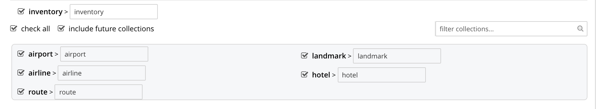The expanded row displays a field whereby collections in the scope can be filtered, based on a string-match. It also features a check all checkbox, which allows all collections to be checked and thereby included in the intended replication.
-
Uncheck all collection checkboxes except the checkbox for
airline. -
Access the remote-collection-name field for
airline; and change the name of the remote collection fromairlinetoMyAirline. -
Uncheck the checkboxes for the scopes
tenant_agent_00totenant_agent_03. The rows fortsscopes now appear as follows: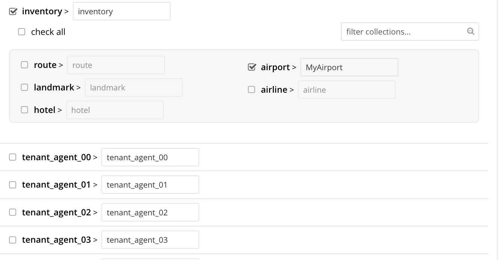 -
Observe the Mapping Rules panel, at the upper right of the screen:
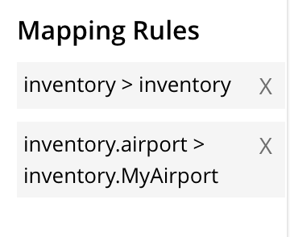
These rules are for informational purposes only: they are generated by the UI in conformance with the interactive selections that you make; and are used by the underlying processes that establish explicit mappings and due replications. Note that you will make use of these rules, in JSON format, when establishing explicit mappings by means of the CLI or REST API. The rules confirm that replication will occur between
inventory.airportandinventory.MyAirport. -
Save the replication, by left-clicking on the Save Replication button, in the lower part of the screen. The XDCR Replications screen is now displayed, with the Outgoing Replications panel indicating that replication is occurring as required between
10.144.210.101and10.144.210.102. -
On cluster
10.144.210.102, access the Scopes & Collections screen for the bucketts. Left-click on the Documents tab, at the right-hand side of the row for theMyAirportcollection, within theinventoryscope. The Documents screen is displayed, as follows: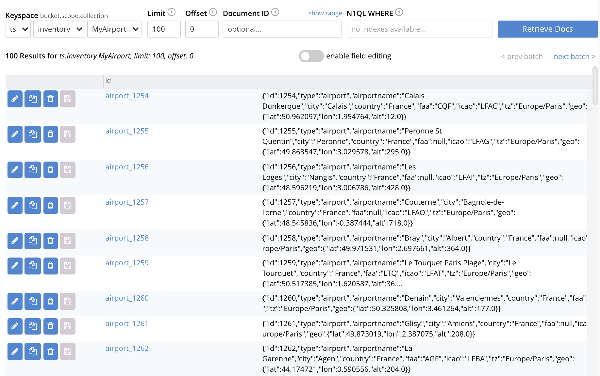
The displayed contents confirm that the explicit-mapping-based replication was successfully created, and is ongoing.
Migrate Data to a Collection, with the UI
By specifying a scope and collection within a target bucket, XDCR can be used to replicate data selectively from the _default collection within one bucket to the purpose-created collection within another.
Once such migration is complete, all future replications between collections should be performed with implicit or explicit mapping, as described in the examples provided on this page, above.
Before migrating data in a production context, note the following:
-
Each established migration rule is CPU-intensive, and may lower XDCR replication performance. The more migration rules are added, the slower each migration replication will be. Therefore, the total number of simultaneous migration-rule-based replications per source cluster should be no greater than 2.
-
Correspondingly, if migration is to be performed with many rules; the replications should be performed 2 at a time. On conclusion of those replications, applications intended to use the migrated data should be appropriately switched over. Then, the next two migration rules should be configured, and the process repeated. Continue in this way until the overall migration is complete.
Note that prior to attempting migration, appropriate settings for deletion filters should be determined. These are individually described in Deletion Filters. However, the significance of deletion-filter settings for replication and migration is explained in detail in Using Deletion Filters: this information should be fully understood before migration is performed.
Migration can now be exemplified as follows.
Note that this example assumes the existence of the clusters already used to demonstrate implicit and explicit mapping, which are 10.144.210.101 and 10.144.210.102.
The source cluster, 101.144.210.101, is assumed to contain the sample bucket beer-sample: note that beer-sample features only the _default scope and collection: therefore, all documents are within the _default collection.
By means of migration, this example separates the document progressively into different keyspaces.
-
Access the Buckets screen of the target cluster,
10.144.210.102. -
Using the procedure described in Create a Bucket, create a Couchbase bucket named
beerSampleByLocation. -
Within
beerSampleByLocation, using the procedures described in Manage Scopes and Collections, create a scope namedCalifornia; and withinCalifornia, three collections, respectively namedSanFrancisco,SanJose, andSacramento. Leave Time-to-Live at its default value of0for each collection.The Scopes & Collections screen should now look as follows:
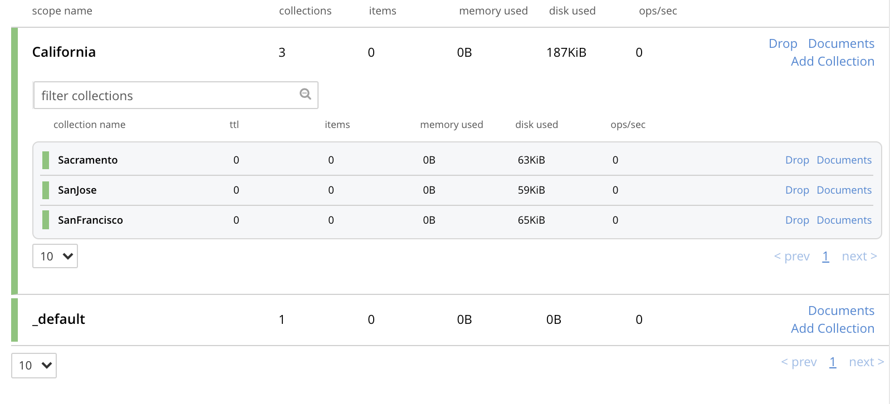
A subset of the data in the source bucket
beer-samplewill now be replicated and sorted into the above keyspaces. -
Access the XDCR Replications screen of cluster
101.144.210.101. Currently, a remote reference to10.144.210.102is defined. -
Create a replication from
101.144.210.101to101.144.210.102. Left-click on the ADD REPLICATION button, at the upper right of the screen. The XDCR Add Replication screen is now displayed: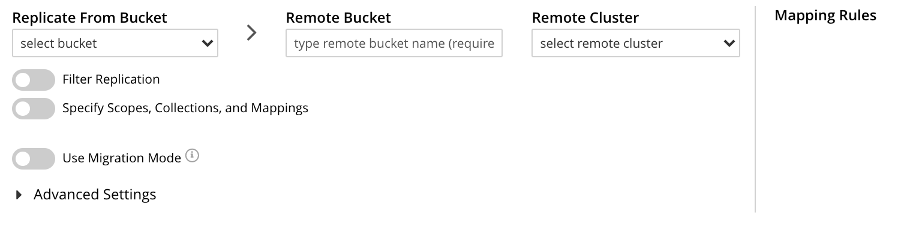 -
Using the three upper fields — Replicate From Bucket, Remote Cluster, and Remote Bucket — define a replication from
beer-sampleon101to the bucketbeerSampleByLocationon102: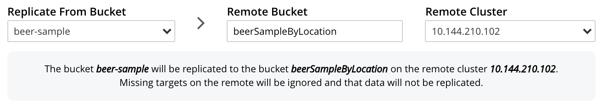Note the confirmatory notification that appears underneath the replication-definition. As this indicates, if a replication is defined to include any destination-entity — bucket, scope, or collection — that does not exist, the entity will be ignored, and no attempt will be made to replicate data to it. However, if other specified entities are valid, replication to them will proceed.
-
Establish appropriate settings for deletion filters. These filters are individually described in Deletion Filters. Detailed information on their significance for migration is provided in Using Deletion Filters.
Left-click on the Filter Replication toggle:
When the Filter Replication panel opens, access the Deletion Filters:
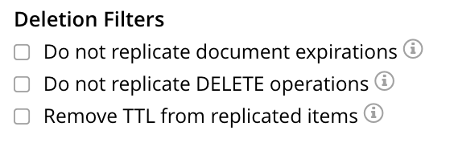For each filter, to ensure that deletions, expirations, and/or TTLs are replicated, leave the settings at their defaults (in each case, with the checkbox unchecked); and to ensure that deletions, expirations, and/or TTLs are not replicated, modify the settings, by checking each checkbox.
-
To migrate data, switch on the Migrate collections toggle, in the middle of the screen:
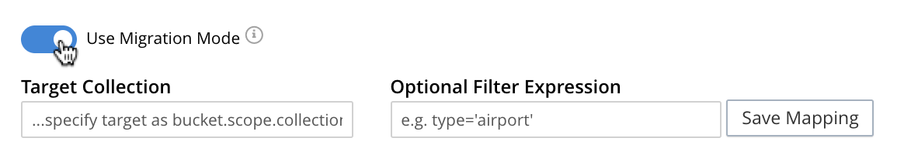Three new fields thus appear, which allow migration to be defined. Replication Filter for Source allows a regular expression to be specified, whereby only a subset of documents within
travel-sampleare replicated. Replicate to Collection allows specification of a collection on the target cluster: the collection must be preceded by the name of the scope that contains it, with scope-name and collection-name comma-separated. The Save Mapping button allows the migration-definition to be saved. -
Specify that documents from
beer-samplebe migrated to the collectionCalifornia.SanFranciscoin the bucketbeerSampleByLocation; using the filter expressioncity="San Francisco"— thereby ensuring that only documents that contain the key-value pair"city": "San Francisco"are included in the migration. The fields now appear as follows: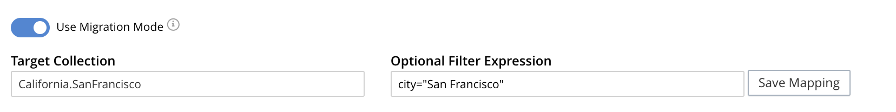Left-click on the Save Mapping button, to save the mapping:
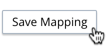Note that the saved rule now appears in the Mapping Rules column, at the upper right of the screen:
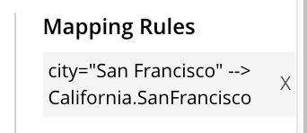 -
Save the replication, by left-clicking on the Save Replication button, at the bottom of the screen:
The XDCR Replications screen now returns, with the Outgoing Replications panel appearing as follows:
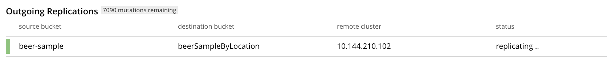As this indicates, the defined replication is now proceeding from
travel-sampleon the source cluster, tobeerSampleByLocationon the remote. -
On cluster
10.144.210.102, access the Buckets screen, and examine the collectionSan Franciscowithin the scopeCalifornia, in the bucketbeerSampleByLocation: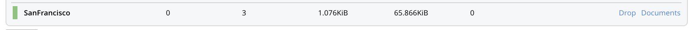The non-zero figures for memory used and disk used for the collection
SanFranciscowithin the scopeCaliforniaindicate that migration of documents into the collection has occurred. -
Left-click on the Documents tab, at the right-hand side of the row for the collection
SanFrancisco: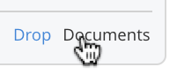The documents within the collection are now displayed:
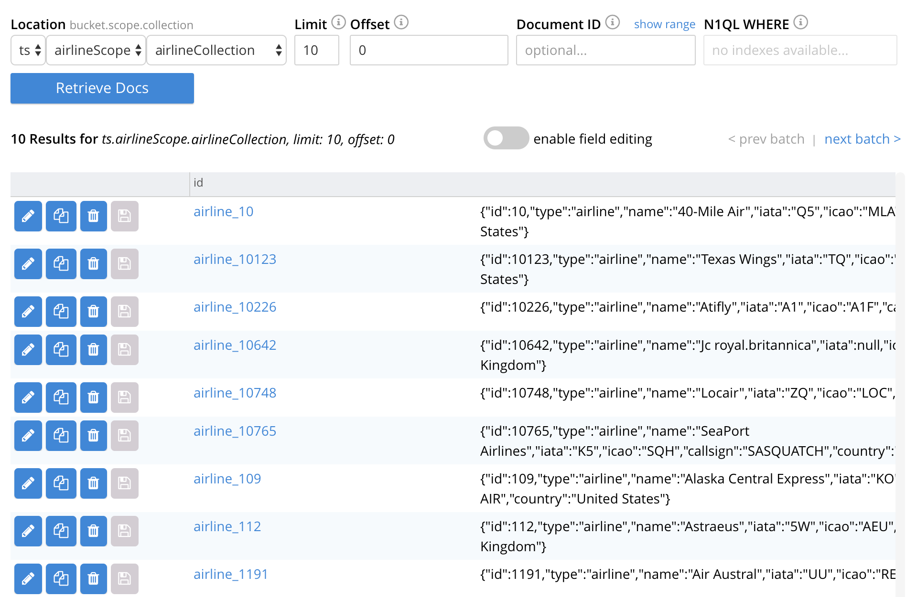This indicates that those documents from
beer-samplewhosecityvalue is"San Francisco"have been successfully filtered and replicated to theCaliforniacollection, within the remote bucketbeerSampleByLocation. -
Having determined that migration has been successfully completed, delete the migration. Return to the XDCR Replications screen, and inspect the row for the replication:
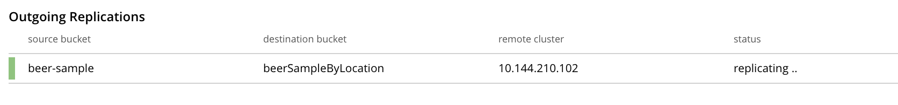Left-click on the row, in order to display the controls:
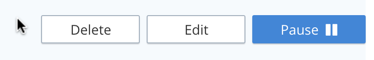Left-click on the Delete button, to delete the migration.
Note that in cases where, following migration, source data is to be deleted, it is essential to delete the migration prior to deletion of the source data, if all data is intended to continue to exist on the targets, and deletion filters have been left at their default values. For detailed information, see Using Deletion Filters
-
Repeating the procedure so far demonstrated, create new, successive migrations for the
SanJoseandSacramentocollections; specifying the appropriatecityvalue for each collection.
In this way, all documents within the source travel-sample bucket can be migrated to appropriate collections on the target cluster.
CLI Procedures
The procedures described above for the UI — covering XDCR replication between scopes and collections, based on implicit and explicit mapping; and migration — can also be effected by means of the Couchbase CLI. The required steps are provided below.
For detailed information on all CLI options for XDCR replication, see the reference page for xdcr-replicate. For more information on creating buckets, scopes, and collections with the CLI, see the reference pages for bucket-create and collection-manage.
Replicate Data Implicitly, with the CLI
Proceed as follows:
-
Establish two one-node clusters,
10.144.210.101and10.144.210.102, according to the description provided above, in Examples on this Page. -
To replicate data according to the implicit mapping of scopes and collections within the source bucket
travel-sampleand the target bucketts, enter the following:/opt/couchbase/bin/couchbase-cli xdcr-replicate \ -c 10.144.210.101:8091 \ -u Administrator \ -p password \ --create \ --xdcr-cluster-name 10.144.210.102 \ --xdcr-from-bucket travel-sample \ --xdcr-to-bucket ts
If the command succeeds, the following response is printed to the console:
SUCCESS: XDCR replication created
Inspection of the collections within the inventory scope on ts now confirms that replication has occurred, according to the implicit mapping established between identically named keyspaces.
Replicate Data Explicitly, with the CLI
Proceed as follows:
-
On the target cluster,
10.144.210.102, within the scopeinventory, establish a new collection namedMyAirport. -
On the source cluster,
10.144.210.101, delete the replication created above in Replicate Data Explicitly with the CLI.To do this, first, obtain the id of the existing replication, by means of the
listflag toxdcr-replicate:/opt/couchbase/bin/couchbase-cli xdcr-replicate \ -c 10.144.210.101:8091 \ -u Administrator \ -p password \ --list
If the command is successful, the following output is provided:
stream id: ac41764b9e261725e874dbd34c7eda6b/travel-sample/ts status: running source: travel-sample target: /remoteClusters/ac41764b9e261725e874dbd34c7eda6b/buckets/ts
Then, delete the replication, using the
deleteflag, and specifying the replication’s id:/opt/couchbase/bin/couchbase-cli xdcr-replicate \ -c l10.144.210.101:8091 \ -u Administrator \ -p password \ --delete \ --xdcr-replicator ac41764b9e261725e874dbd34c7eda6b/travel-sample/ts
If the command is successful, the following output is provided:
SUCCESS: XDCR replication deleted
-
On the source cluster,
10.144.210.101, create a new replication to the target cluster10.144.210.102, specifying the explicit mapping of the source collectionairlineto the target collectionMyAirline:/opt/couchbase/bin/couchbase-cli xdcr-replicate \ -c 10.144.210.101:8091 \ -u Administrator \ -p password \ --create \ --xdcr-cluster-name 10.144.210.102 \ --xdcr-from-bucket travel-sample \ --xdcr-to-bucket ts \ --collection-explicit-mappings 1 \ --collection-mapping-rules '{"inventory.airline":"inventory.MyAirline"}'Note that the
collection-explicit-mappingsflag has been specified, with a value of1; indicating that an explicit-mapping rule is being provided. The rule itself is specified as the value for thecollection-mapping-rulesflag; and affirms that the documents in the source collectioninventory.airlineare to be replicated to the target collectioninventory.MyAirline.
Examination of the target collection inventory.MyAirline will confirm that replication is occurring, due to the presence of replicated documents from the source collection inventory.airline.
Migrate Data, with the CLI
Before migrating data with the CLI, read the information regarding the CPU-intensiveness of data migration, provided above in Migrate Data to a Collection with the UI. Then, proceed as follows:
-
Ensure that the source cluster contains the sample bucket
beer-sample; and that the target cluster contains a bucket namedbeerSampleByLocation, with a scope and collections as described above, in Migrate Data, with the UI. -
Replicate to the target collection
California.SanFrancisco, within the target bucketbeerSampleByLocation, all documents from the source bucketbeer-samplewhosecityvalue is"San Francisco". Enter the following expression:/opt/couchbase/bin/couchbase-cli xdcr-replicate \ -c 10.144.210.101:8091 \ -u Administrator \ -p password \ --create \ --xdcr-cluster-name 10.144.210.102 \ --xdcr-from-bucket beer-sample \ --xdcr-to-bucket beerSampleByLocation \ --collection-migration 1 \ --collection-mapping-rules '{"city=\"San Francisco\"":"California.SanFrancisco"}'The
collection-migrationflag is specified, with a value of1. Note the format required for the specifying ofcollection-mapping-rules: the regular expression"city=\"San Francisco\"is provided as the key of a key-value pair, whose value is the destination collection,"California.SanFrancisco". Note also that, in cases where all data from the source bucket is to be migrated, and no regular expression is therefore required, the key of the key-value pair should be specified as the keyspace of the default bucket: i.e."_default._default".If the command is successful, the following output is displayed:
SUCCESS: XDCR replication created
Documents are now replicated as specified by the explicit mapping and filter.
See xdcr-replicate for information on setting deletion filters with the CLI; and see Using Deletion Filters for information on how to use deletion filters, in the context of migrating data.
REST API Procedures
The procedures described above for the UI and CLI — covering XDCR replication between scopes and collections, based on implicit and explicit mapping; and migration — can also be effected by means of the Couchbase REST API. The required steps are provided below.
For detailed information on all REST API options for XDCR replication, see the reference page for xdcr-replicate. For more information on creating buckets, scopes, and collections with the REST API, see the reference pages for Creating and Editing Buckets and Scopes and Collections REST API.
Replicate Data Implicitly, with the REST API
-
Establish two one-node clusters,
10.144.210.101and10.144.210.102, according to the description provided above, in Examples on this Page. -
To replicate data according to the implicit mapping of scopes and collections within the source bucket
travel-sampleand the target bucketts, enter the following:curl -v -X POST -u Administrator:password \ http://localhost:8091/controller/createReplication \ -d replicationType=continuous \ -d fromBucket=travel-sample \ -d toCluster=10.144.210.102 \ -d toBucket=ts
If the command succeeds, a response similar to the following is printed to the console:
{"id":"ac41764b9e261725e874dbd34c7eda6b/travel-sample/ts"}
Inspection of the collections within the inventory scope on ts now confirms that replication has occurred, according to the implicit mapping established between identically named keyspaces.
Replicate Data Explicitly, with the REST API
Proceed as follows:
-
On the target cluster,
10.144.210.102, within the scopeinventory, establish a new collection namedMyAirport. -
On the source cluster,
10.144.210.101, delete the replication created above in Replicate Data Explicitly with the CLI.To do this, first, obtain the id of the existing replication, by means of the following expression, which uses the
GET /pools/default/tasksmethod and URL, as well as jq andgrep:curl -v -u Administrator:password -X GET \ http://10.144.210.101:8091/pools/default/tasks | \ jq '.' | \ grep "cancelURI"
If the command is successful, the following output is retrieved from the returned object:
"cancelURI": "/controller/cancelXDCR/ac41764b9e261725e874dbd34c7eda6b%2Ftravel-sample%2Fts",
The returned
cancelURIreferences the id of the replication.Now, delete the replication by means of the
DELETE /conroller/cancelXDCR/<replication-id>method and URI:curl -X DELETE -u Administrator:password \ http://10.144.210.101:8091/controller/cancelXDCR/ac41764b9e261725e874dbd34c7eda6b%2Ftravel-sample%2Fts
If the command is successful, no output is provided.
-
On the source cluster,
10.144.210.101, create a new replication to the target cluster10.144.210.102, specifying the explicit mapping of the source collectionairlineto the target collectionMyAirline:curl -v -X POST -u Administrator:password \ http://localhost:8091/controller/createReplication \ -d replicationType=continuous \ -d toBucket=ts \ -d toCluster=10.144.210.102 \ -d fromBucket=travel-sample \ -d collectionsExplicitMapping=true \ -d colMappingRules=%7B%22inventory.airline%22%3A%22inventory.MyAirline%22%7D
Note that the
collectionsExplicitMappingflag has been specified, with a value oftrue. The value ofcolMappingRulesis an encoded JSON object whose key is the source collection, and whose target is the target collection. If the call is successful, the following output is displayed:SUCCESS: XDCR replication created
Examination of the target collection
inventory.MyAirlinewill confirm that replication is occurring, due to the presence of replicated documents from the source collectioninventory.airline.
Migrate Data, with the REST API
Before migrating data with the REST API, read the information regarding the CPU-intensiveness of data migration, provided above in Migrate Data to a Collection with the UI. Then, proceed as follows:
-
Ensure that the source cluster contains the sample bucket
beer-sample; and that the target cluster contains a bucket namedbeerSampleByLocation, with a scope and collections as described above, in Migrate Data, with the UI. -
Replicate to the target collection
California.SanFrancisco, within the target bucketbeerSampleByLocation, all documents from the source bucketbeer-samplewhosecityvalue is"San Francisco". Enter the following expression:curl -v -X POST http://10.144.210.101:8091/controller/createReplication \ -u Administrator:password \ -d replicationType=continuous \ -d toBucket=beerSampleByLocation \ -d toCluster=10.144.210.102 \ -d fromBucket=beer-sample \ -d collectionsMigrationMode=true \ -d colMappingRules='{"city=\"San Francisco\"":"California.SanFrancisco"}'The
collectionsMigrationModeflag is specified, with a value oftrue. Note the format required for the specifying ofcolMappingRules: the regular expression"city=\"San Francisco\"is provided as the key of a key-value pair, whose value is the destination collection,"California.SanFrancisco". (Note also that, in cases where all data from the source bucket is to be migrated, and no regular expression is therefore required, the key of the key-value pair should be specified as the keyspace of the default bucket: i.e."_default._default".)If the command is successful, output containing the id of the replication is displayed:
{"id":"ac41764b9e261725e874dbd34c7eda6b/beer-sample/beerSampleByLocation"}
Documents are now migrated as specified by the explicit mapping and filter.
See Creating XDCR Replications for information on setting deletion filters with the REST API; and see Using Deletion Filters for information on how to use deletion filters, in the context of migrating data.
Rules for Explicit Mapping and Migration
Explicit mapping and migration must be specified according to rules. Use of Couchbase Web Console generates mappings that automatically conform with these rules: however, use of the CLI and REST API requires creation of a JSON payload, in which rules are correctly expressed by the administrator.
All rules are listed in Rules for Explicit Mappings and Rules for Migration.
Next Steps
An XDCR replication can be filtered, by means of regular expressions; so that only selected documents are replicated from the source to the target cluster. See Filter a Replication.